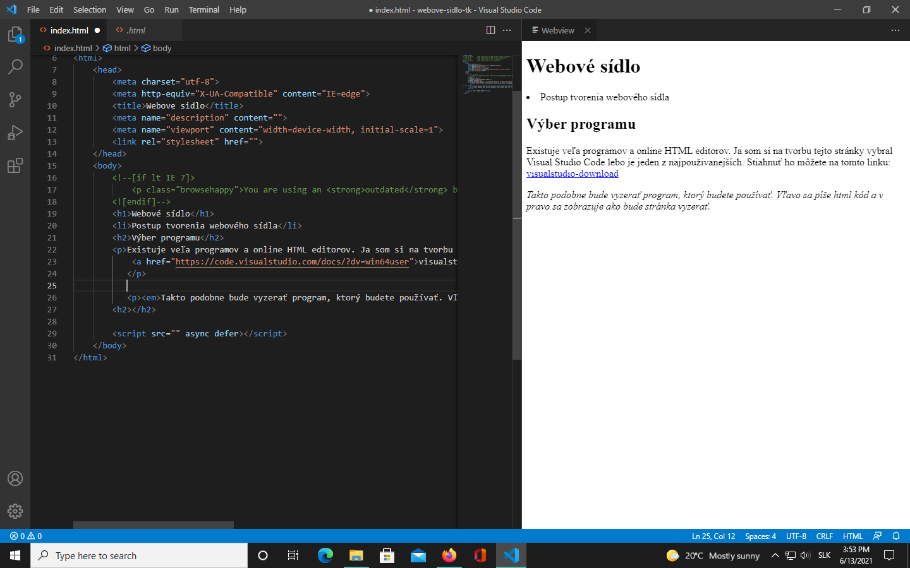

Existuje veľa programov a online HTML editorov. Ja som si na tvorbu tejto stránky vybral Visual Studio Code lebo je jeden z najpouživanejších. Stiahnuť ho môžete na tomto linku: visualstudio-download
Takto podobne bude vyzerať program, ktorý budete používať. Vľavo sa píše html kód a v pravo sa zobrazuje ako bude stránka vyzerať.
Ako vidíte vyššie som vložil screenshot mojej obrazovky. Na vloženie obrazka pouzijeme element <img src="" alt="">. Ak chcete upraviť velkosť obrázku stačí za element dopísať width= "(počet pixelov)"height="(počet pixelov)"
Písanie je základom tvorenia stránky preto si ukážeme elementy, ktoré som požil na tejto stránke. Nadpis<h1> Podnadpis<h2> Obyčajný text <p> Šikmé písmo <em>
Posledný krok vytvárania stránky je jej zverejnenie. Zaleží či chceme, aby bola stránka pre všetkých verejne dostupná alebo len konkrétnym užívatelom. V mojom prípade bude stránka dostupná len konkrétnej osobe.